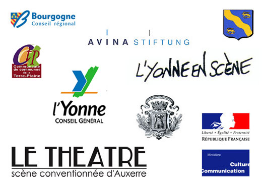

| |
|
| Ayin de Sela « le ciel de monthelon « |
 |
Association du Château de Monthelon - Projet 2013
Lieu pluridisciplinaire dédié à la recherche, au développement et à la réalisation d’idées artistiques
|
| La vie de l’association
La création d’un poste d’administration pérenne, priorité de l’année 2013
Chaque année, le Château de Monthelon structure d’avantage son fonctionnement. Après la création de l’association en 2009, la priorité est aujourd’hui la création d’un poste d’administration pérenne. L’association souhaite embaucher un professionnel qualifié et expérimenté, qui saura résoudre les problématiques complexes et diverses que pose la gestion d’un lieu tel que Monthelon.
Cette embauche s’avère aujourd’hui importante quant au développement du lieu, de ses activités et du pôle d’attractivité artistique qu’il représente au niveau local, national et international (cf. étude des compagnies de cirque en Bourgogne en 2011 du LAB) mais également quant à l’existence même du lieu. En effet, le propriétaire actuel du Château, ne pouvant plus assumer l’entretien et la gestion du bâtiment, souhaite transmettre ceux-ci à une fondation et à l’association par le biais d’un bail emphytéotique. Or l’association ne pourra assumer cette charge sans administrateur compétent.
Outre la gestion courante et celle des activités existantes de l’association, l’administrateur aura pour mission de renforcer à tous niveaux la structure :
- Continuer la structuration de l’association pour une transparence toujours plus forte vers les partenaires.
|
|
|
|
- Assurer une bonne gestion et stabiliser la base financière pour le fonctionnement de l’association.
- Rechercher de nouveaux partenaires financiers, notamment dans le secteur privé des fondations, pour la gestion du bâtiment (investissement) et le développement des activités.
- A terme, permettre la transition, à l’association de devenir bailleur emphytéotique.
- Pérenniser l’activité principale de l’association (résidences artistiques), notamment par l’embauche en CDI de la personne chargée de l’accueil des artistes et dont le contrat aidé arrive à terme.
- Continuer de développer l’ouverture vers les publics, les partenariats au niveau local, la présence et l’échange sur un territoire rural : organisation des activités de formation, sorties de résidence, Rencontres de Monthelon, etc.
- Sensibiliser le Ministère de la Culture et de la Communication quant aux activités de l’association, le caractère inédit et essentiel de sa démarche vers les artistes, dans le sens d’une reconnaissance institutionnelle, d’une « labellisation ».
- Améliorer la communication de l’association afin de mettre en valeur l’existant, d’accroître la visibilité de ses activités au niveau local, national et international. A l’époque de la communication de masse, le rayonnement d’un projet artistique contribue fortement à la mise en valeur d’un territoire.
- Mettre en place une stratégie de développement durable, dans le respect de l’éthique du Château de Monthelon et de ses fondateurs, qui privilégie la recherche artistique, la qualité de l’échange et de la rencontre humaine.
|
|
|
| Les résidences artistiques
Depuis sa création, le château de Monthelon a pour mission la recherche, le développement et la réalisation d’idées artistiques. Il accueille en résidence les artistes « en amont de l’amont », afin de leur permettre de formuler leurs projets, de poser les bases, d’écrire, d’entrer en création, de se tourner vers l’avenir. Le travail réalisé à Monthelon est une étape essentielle du processus de création, un investissement vers l’avenir. Les projets formulés dans le lieu trouvent leur vie ailleurs, notamment dans les théâtres de la région, souvent du monde entier.
En 2013, le château accueillera à nouveau entre 30 et 40 projets, soit environ 150 artistes. Le cirque, à l’origine du projet de Monthelon, sera encore largement représenté. En parallèle à l’évolution de cette discipline, qui mêle de plus en plus les esthétiques, le château s’est également peu à peu ouvert à d’autres : théâtre, danse, musique, arts plastiques, cinéma, etc. Les artistes accueillis viennent de différents horizons : français ou étrangers, compagnies conventionnées ou non, orchestres, plasticiens ou vidéastes, etc.
Durant le premier semestre, le château prévoit dores et déjà la venue de plusieurs projets.
La Cie de théâtre physique, entre cirque et danse, Tonin Palazzoto travaillera autour de « l’éveil de la glèbe », célèbre roman de l’écrivain norvégien Knut Hamsun, prix Nobel de littérature en 1920.
Le comédien Laurent Zinseman, interprète de la Cie l’Entreprise de François Cervantès notamment, mènera une recherche personnelle sur la rencontre entre le kabuki, forme épique du théâtre japonais traditionnel et le théâtre occidental.
| |
| |
La Cie de danse Alfred Alerte, installée entre la Bourgogne et l’Ile de France, et qui place la sensibilisation des publics au centre de ses activités, répètera son prochain spectacle « D’ici et là ». http://www.ciealfredalerte.com/
Outre ces compagnies nationales, le Château de Monthelon accueillera comme tous les ans des compagnies et des projets internationaux, notamment dans les domaines des arts plastiques et de la vidéo.
Le château développe depuis plusieurs années des liens privilégiés avec l’Amérique latine. En 2013, la venue de trois compagnies de cirque chiliennes est prévue, grâce au soutien financier du « Consejo de la Cultura », qui verse des bourses aux artistes en résidence à Monthelon.
Suite à son passage en septembre 2012, l’orchestre Tipica guardia cadenera, composé de musiciens professionnels de 7 pays différents et jouant dans les plus grands orchestres européens, souhaite revenir travailler au Château en juillet 2013 après leur tournée. http://www.guardiacadenera.com/
L’artiste plasticien portuguais Paolo Morais prévoit de venir 4 mois en résidence pour réaliser un projet d’installation, en partie vidéo. http://vimeo.com/45555878
Les 10 membres du collectif d’artistes des « rencontres internationales de performance » (France, Belgique, Autriche, Allemagne et Suisse) mèneront une recherche autour de la performance en Europe.
Pour la première fois, deux artistes plasticiennes et vidéastes chinoises ont demandées à être accueillies.
Il est également intéressant de mentionner que le château a reçu pour 2013 quatre demandes pour des projets cinématographiques. La réalisatrice Delphine Lanson, membre du CA de l’association a déposé un projet de documentaire sur l’histoire et les activités de Monthelon auprès la chaîne Arte, sur le thème des « nouvelles utopies ». Le réalisateur et producteur danois Morton Hartz Kaplers souhaiterait pour sa part que le château puisse accueillir son équipe lors du tournage de son prochain film dans la région.
Enfin, au niveau local, le Château de Monthelon entretient une coopération étroite avec L’Yonne-en-scène. Comme d’autres précédemment, Ayin de Sela, artiste résidente du Château et Sky de Sela, membre du C.A. de Monthelon, créeront en 2013 deux spectacles pour le Bus Théâtre, qui tournera l’été prochain dans le département.
Cette année encore, le Château de Monthelon se pose comme un lieu d’échanges artistiques foisonnants. Français, chiliens, danois et même chinois auront l’occasion de se rencontrer sur ce territoire de l’Yonne, d’enrichir l’écriture de leurs projets grâce aux paysages et à l’ambiance particulière du lieu. |
|
|
| L’ouverture au public |
|
Sorties de résidences et expositions
En 2013, le château continuera d’ouvrir ses portes et de dévoiler ses activités à l’occasion de sorties de résidences. Les artistes qui le souhaitent peuvent en effet partager le fruit de leur recherche avec les adhérents et le voisinage. Ces sorties de résidences, objets de présentation plus ou moins finis, permettent de sensibiliser les publics à la spécificité du processus de création. Elle permettent également d’offrir à une population rurale un accès régulier et varié à la culture. Au fur et à mesure des années, ces sorties ont trouvé leurs publics qui reviennent fidèlement à chaque rendez-vous mais aussi de nouveaux, selon les propositions artistiques.
L’équipe du château de Monthelon utilise d’ailleurs ses outils de communication pour maintenir le lien avec ses adhérents et attirer d’autres public (mailings, tracts et affichettes) et souhaite continuer de dynamiser ces moments de rencontre.
Il est encore difficile de prévoir quels artistes souhaiteront montrer leur travail en 2013. |
Il est cependant possible d’affirmer que l’artiste plasticien portuguais Paolo Morais présentera au château son projet d’installation vidéo. Peut-être sera-t-il possible d’étendre cette exposition dans plusieurs lieux du département en collaboration avec des institutions locales.
Suite à l’accueil chaleureux que leur a fait le public du château en septembre 2012 lors d’un premier concert, l’orchestre Tipica guardia cadenera souhaite réitérer et même développer l’expérience l’été prochain. L’équipe de Monthelon pense faire appel à d’autres artistes habitants les environs ou résidents du château (danseurs, circassiens, etc.) afin de créer ensemble une « Soirée Tango Cabaret » en collaboration avec les théâtres de Bourgogne.
Les Rencontres de Monthelon
Depuis 7 ans déjà, les Rencontres de Monthelon sont un rendez-vous important de l’été icaunais. En témoignent l’affluence du public et les nombreux articles de presse locale sur le sujet. Les Rencontres sont une nouvelle occasion pour le château d’ouvrir le lieu, de faire découvrir ses activités de création et d’offrir un moment festif et joyeux à la population alentour.
Cependant, l’année 2013 étant principalement consacrée à la structuration et au renforcement de l’association et au maintien des résidences de création, mission principale de l’association, il a fallut procéder à des choix budgétaires. Le Conseil d’administration a décidé de ne pas reconduire les Rencontres cette année, du moins sous leur forme classique. L’économie de 10 000 € réalisée ici permettra de dégager des fonds pour l’embauche d’un administrateur qualifié.
A moins que l’administrateur ne parvienne à trouver les fonds nécessaires dès 2013 (aides au projet, fonds privés, etc.) ou que les artistes membres du CA de l’association organisent un événement sur la base d’un bénévolat total, sans apport financier d’aucune sorte (défraiements kilométriques, repas, location de matériel et de personnel technique, etc.), les Rencontres n’auront pas lieu.
Il s’agit ici d’un choix conscient et assumé pour cette année uniquement et qui permettra d’améliorer l’avenir.
Programmation estivale
Afin de pallier l’annulation des Rencontres et de permettre au public alentour de partager et de profiter d’avantage des activités de l’association, l’équipe a l’idée de mettre en place une programmation pendant la saison estivale. Il s’agit de présenter des spectacles créés au Château de Monthelon et déjà en tournée dans des théâtres et des festivals nationaux et internationaux. L’ouverture d’une billetterie est en débat, qui permettrait de financer les frais techniques, les frais annexes et les salaires des interprètes.
Pour lors, trois propositions ont été faites à l’association mais il est encore trop tôt pour s’engager davantage dans cette voie. |
|
|
| Les activités annexes
Les formations
En lien avec l'état d'esprit développé au Château de Monthelon depuis plus de 20 ans, les formations artistiques proposées s'orientent autour de l'approche, de la compréhension et de la pratique de la création artistique. Différents cycles de formation ont été imaginés, ayant tous comme socle commun une vision qui englobe le mental, le corps et la technique. Leurs buts est de permettre de prendre ou (re)prendre contact avec la créativité en l'explorant et en l'apprivoisant. Le travail collectif, l'écoute, la curiosité sont au cœur de ces formations, qui ont comme supports artistiques les techniques de cirque, le clown, la danse, la musique, la voix et la mise en scène. Les formations s'adressent aux artistes professionnels qui souhaitent se réorienter dans une autre discipline artistique que la leur, ou voulant développer de nouvelles techniques (ou méthodes) pour enrichir leurs propres créations.
Début 2012, deux formations ont été menées. D’autres sont en attente. Elle n’ont pas pu se dérouler faute d’une personne pour les organiser. Lorsque l’association aura un administrateur, une des priorités sera de reprendre et d’actualiser ce volet d’activité en profitant du savoir faire des artistes locaux et de leur volonté de transmission, de travailler sur l’obtention d’un agrément AFDAS et de développer le programme « Formations en Bourgogne » en collaboration, entre autre, avec le LAB – Cirq’enflex – et Jérôme Thomas.
En 2013, plusieurs formations sont envisageables, menées par des artistes qui gravitent autour de Monthelon depuis de nombreuses années :
- Stage technique et mise en piste – par Jean-Paul Lefeuvre
- Formation burlesque et clown – par Alexandre Demay
- Stage sur le mouvement du corps – par Monica Klinger
- Comment mettre son corps en jeu et gérer sa représentation ? – par Anne Delahaye et Nicolas Leresche
- Stage de musique utilisant le corps et la voix – par Sébastien Appert
- Stage de recherche sur les liens entre la voix et le mouvement – par Marie Christine Cohen Emery
Les rencontres dans la matière
Jean-Benoît Mollet, membre du CA et directeur artistique de la Compagnie de cirque contemporain Anomalie &… souhaite développer en 2013 au Château de Monthelon un concept de rencontres entre des professionnels autour d’un thème de recherche commun, qui les intéressent :
« L'idée est de réunir un groupe de personne pendant une semaine autour d'un sujet et d'un intervenant. Le matin, on discute autour de ce sujet et l'après midi, on fait des propositions, on improvise et "on ne sait pas ce qui va se passer". Le groupe changera à chaque rencontre. Il y en aura une dans l'année. Je propose que la première année soit consacrée à "La première guerre Mondiale" parce que je connais un historien passionnant et spécialiste de la question. On peut aussi parler de pétrole, de migration, de politique, de rétention, de prison, .... On invitera des spécialistes sur ces questions, des artistes d’horizons divers, des ostéopathes, etc… » Jean Benoît Mollet
Ces rencontres dans la matière sont une réflexion sur la nature désintéressée de la Recherche, qui ne doit pas avoir systématiquement d’obligation de résultat, comme montrer un spectacle par exemple. La recherche est inhérente au travail de l’artiste et tous les sujets enrichissent l’imaginaire de ce dernier. |
|
La gestion du bâtiment
|
|
Travaux
Le Château de Monthelon est un château médiéval. Il a donc besoin d’un entretien régulier. L’aide à l’investissement de la DRAC a permis de réaliser des travaux d’isolation en 2012.
En 2013, la priorité est l’installation d’un chauffage central (chaufferie et branchement au réseau d’eau et de sanitaires). Le château n’a plus de chauffage depuis 2009 et l’activité s’en trouve très réduite durant les mois d’hiver.
L’ADEME a accepté de financer 80 000 € en 2012 sur les 150 000 € nécessaires à l’achat de la chaufferie. L’année prochaine, l’association doit rechercher 70 000 € de financements pour compléter le budget de la chaufferie et 30 000 € pour le branchement au réseau d’eau.
|
En parallèle et sur le long terme, l’association souhaite continuer progressivement à réaliser des travaux, selon le concept de l’énergie durable : installation de panneaux solaires, isolation, etc…
Ces travaux ont pour but de développer et de pérenniser les activités artistiques du Château (périodes d’accueil en résidences plus importantes, amélioration de l’accueil des artistes, etc.).
Le vie au Château
En 2013, Jean-Benoît Mollet, de la compagnie conventionnée Anomalie &…, et sa compagne Cille Lansade, de la compagnie belge Dorina Fauer, souhaitent s’installer sur le terrain de Monthelon avec leurs deux filles. Avec un architecte, ils préparent la construction d’un module d’habitation, inscrite dans un concept énergétique durable et sont en discussion avec la Mairie de Montréal.
Désormais, le château sera habité par 7 adultes et 5 enfants, sans compter la cinquantaine de personnes qui gravitent autour du château et habitent aux alentours. Ce concept de module d’habitation est une idée pour l’avenir. | |
L’avenir
|
|
Force et fragilité caractérisent le projet du Château de Monthelon. La force du lieu, des paysages de l’Yonne qui l’entourent, des artistes accueillis en résidence, des projets créés et des recherches menées à Monthelon. La fragilité actuelle de l’association, du bâtiment et de son entretien, entre autres. Le projet présenté pour 2013 reflète en profondeur ces différents aspects, dans une volonté de continuer à avancer sur tous les fronts : artistique, administratif, technique, communication et ouverture au public. Avec l’aide des membres de l’association, des artistes et de nos partenaires, nous souhaitons développer le potentiel du lieu et mettre en valeur le travail accompli depuis plusieurs années. |
| |
|  |
Partenaires et remerciements
L'association du Château de Monthelon est soutenue financièrement par la Direction Régionale des Affaires Culturelles de Bourgogne, le Conseil Régional de Bourgogne, le Conseil Général de l’Yonne, la Communauté de communes de la Terre Plaine et la Fondation Avina.
Merci à la ville d’Avallon, la commune de Montréal, le Théâtre d’Auxerre, L’Yonne en Scène et tous les bénévoles, adhérents et artistes en résidence pour leur précieux soutien.
Au debut de la page |
|
|
|